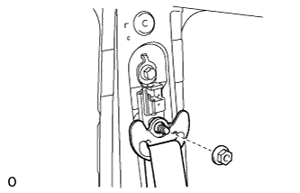

ПЕРЕДНИЙ РЕМЕНЬ С КАТУШКОЙ И ПРЕДНАТЯЖИТЕЛЕМ В СБОРЕ (для 5-дверной модели) > СНЯТИЕ |
| 1. ОТСОЕДИНИТЕ ПРОВОД ОТ ОТРИЦАТЕЛЬНОГО ВЫВОДА АККУМУЛЯТОРНОЙ БАТАРЕИ |
| 2. СНИМИТЕ ОПОРНУЮ НАКЛАДКУ ЛЕВОЙ ДВЕРИ В СБОРЕ |
 |
Наклейте защитную ленту вокруг опорной накладки двери.
С помощью отвертки освободите 4 фиксатора, 10 захватов и 2 направляющих и снимите опорную накладку двери.
| *1 | Защитная клейкая лента |
| 3. СНИМИТЕ УПЛОТНИТЕЛЬ ОБШИВКИ ПРОЕМА ЛЕВОЙ ПЕРЕДНЕЙ ДВЕРИ |
Частично снимите уплотнитель обшивки проема передней двери так, чтобы можно было снять нижнюю облицовочную накладку средней стойки кузова и облицовочную накладку средней стойки кузова (Нажмите здесь).
| 4. СНИМИТЕ ЗАДНЮЮ НАКЛАДКУ ПОРОГА ПОЛА № 1 (для моделей с задним сиденьем № 2) |
 |
С помощью отвертки освободите 2 захвата и снимите заднюю накладку порога пола № 1.
| *1 | Защитная клейкая лента |
| 5. СНИМИТЕ ЛЕВУЮ ЗАДНЮЮ БОКОВУЮ ОПОРНУЮ НАКЛАДКУ (для моделей с задним сиденьем № 2) |
 |
Выверните 2 болта и снимите заднюю боковую опорную накладку.
| 6. СНИМИТЕ ОПОРНУЮ НАКЛАДКУ ЛЕВОЙ ЗАДНЕЙ ДВЕРИ |
 |
Наклейте защитную клейкую ленту вокруг опорной накладки задней двери.
С помощью отвертки освободите 3 фиксатора, 6 захватов и 2 направляющие и снимите опорную накладку задней двери.
| *1 | Защитная клейкая лента |
| 7. СНИМИТЕ УПЛОТНИТЕЛЬ ОБШИВКИ ПРОЕМА ЛЕВОЙ ЗАДНЕЙ ДВЕРИ |
Частично снимите уплотнитель обшивки проема задней двери так, чтобы можно было снять нижнюю облицовочную накладку средней стойки кузова и облицовочную накладку средней стойки кузова (Нажмите здесь).
| 8. СНИМИТЕ НАКЛАДКУ КРЕПЛЕНИЯ ПОЯСНОГО РЕМНЯ БЕЗОПАСНОСТИ |
 |
Освободите 3 захвата и снимите накладку крепления поясного ремня безопасности.
| 9. СНИМИТЕ НИЖНЮЮ ОБЛИЦОВОЧНУЮ НАКЛАДКУ ЛЕВОЙ СРЕДНЕЙ СТОЙКИ КУЗОВА |
 |
Выверните болт и отсоедините напольное крепление ремня безопасности переднего сиденья.
 |
Освободите 4 захвата и 2 фиксатора, и снимите нижнюю облицовочную накладку средней стойки кузова.
| 10. СНИМИТЕ ЛЕВУЮ ЗАГЛУШКУ ВЕРХНЕГО ПОРУЧНЯ № 2 |
С помощью отвертки освободите 2 захвата и снимите переднюю заглушку верхнего поручня № 2.
| *1 | Защитная клейкая лента |
| 11. СНИМИТЕ ЛЕВЫЙ ВЕРХНИЙ ПОРУЧЕНЬ № 2 |
 |
Выверните 2 болта.
Освободите 2 захвата и снимите верхний поручень № 2.
| 12. СНИМИТЕ ОБЛИЦОВОЧНУЮ НАКЛАДКУ ЛЕВОЙ СРЕДНЕЙ СТОЙКИ КУЗОВА |
 |
Переместите регулятор плечевого крепления переднего ремня безопасности в крайнее нижнее положение.
Выверните болт.
Открепите 2 фиксатора и 2 направляющие.
Пропустите напольное крепление ремня безопасности переднего сиденья через облицовочную накладку средней стойки кузова и снимите облицовочную накладку средней стойки кузова.
| 13. СНИМИТЕ ПЕРЕДНИЙ РЕМЕНЬ С КАТУШКОЙ И ПРЕДНАТЯЖИТЕЛЕМ В СБОРЕ |
|  |
Отверните гайку и снимите плечевое крепление.
 |
Отсоедините разъем преднатяжителя A, как показано на рисунке.
Для моделей с предаварийной системой безопасности:
Отсоедините разъем предаварийной системы безопасности B.
Выверните болт и снимите замок ремня безопасности.
| 14. СНИМИТЕ НАКЛАДКУ ПЛЕЧЕВОГО КРЕПЛЕНИЯ ПЕРЕДНЕГО РЕМНЯ БЕЗОПАСНОСТИ В СБОРЕ |
 |
Выверните 2 болта и снимите накладку крепления.